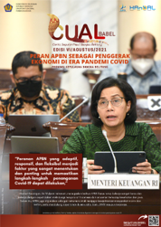

AVIRA SUKMAANANDA HIDAJATULLOH
Finance | Budgeting | Informatics Learner
Saya adalah individu yang adaptif, analitis, dan berorientasi pada solusi, dengan latar belakang pendidikan Teknik Informatika dan pengalaman profesional di bidang analisis data serta layanan SDM. Terbiasa bekerja secara terstruktur dan lintas fungsi, saya memiliki kemampuan dalam mengelola informasi secara sistematis, membangun komunikasi yang efektif, serta menyelesaikan tugas dengan efisien dan penuh tanggung jawab.
Di luar kemampuan teknis, saya dikenal sebagai pribadi yang reflektif, pembelajar cepat, dan memiliki empati tinggi dalam bekerja sama. Saya mampu menjaga keseimbangan antara produktivitas kerja dan kehidupan pribadi, menjadikan saya sosok yang konsisten dan bisa diandalkan dalam berbagai situasi. Saya percaya bahwa nilai integritas, pembelajaran berkelanjutan, dan kepemimpinan berbasis kolaborasi adalah fondasi utama dalam menciptakan hasil kerja yang berdampak.
PORTOFOLIO
EDUCATION
| Year | Institution | Program |
|---|---|---|
| 2018–2019 | PKN STAN | D1 Manajemen Keuangan |
| 2019–2023 | Universitas Terbuka | S-1 Manajemen |
| 2024–Now | Universitas Siber Asia | S-1 Informatika |
WORK EXPERIENCE
| Period | Company | Position |
|---|---|---|
| 2019–2020 | DJPb | Magang |
| 2020–2022 | DJPb | Budget Implementation Development |
| 2022–2023 | DJPb | Regional Budget Analyst |
| 2023–Now | DJPb | Human Resources |
HARD SKILLS
- Data Analysis
- Budget Planning
- Microsoft Excel
- Web Development Basics
SOFT SKILLS
- Empathy and Active Listening
- Resilience with Emotional Depth
- Reflective Decision-Making